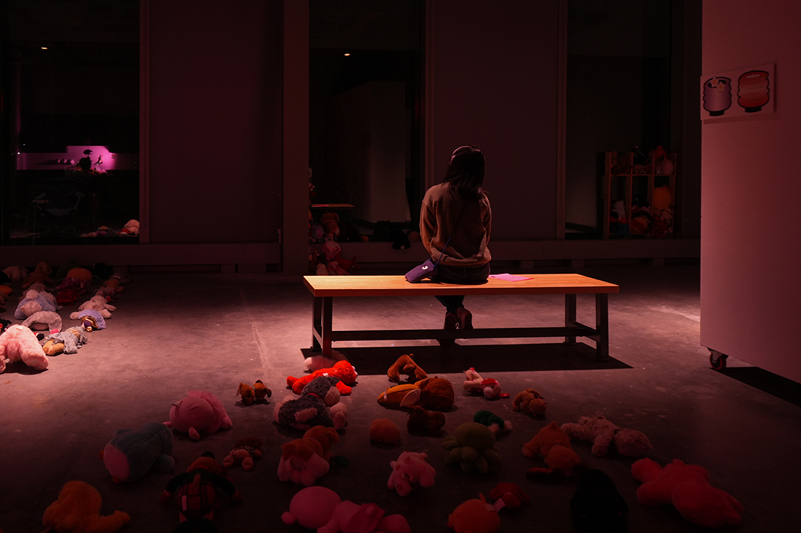
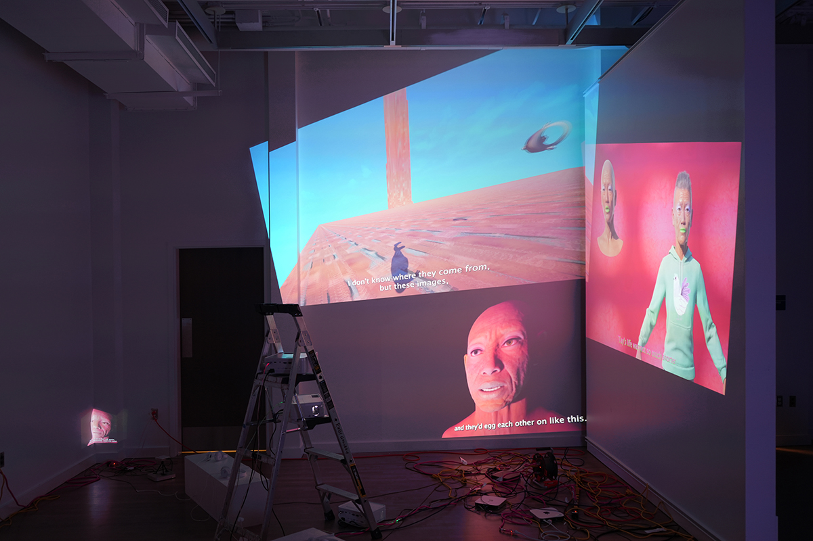
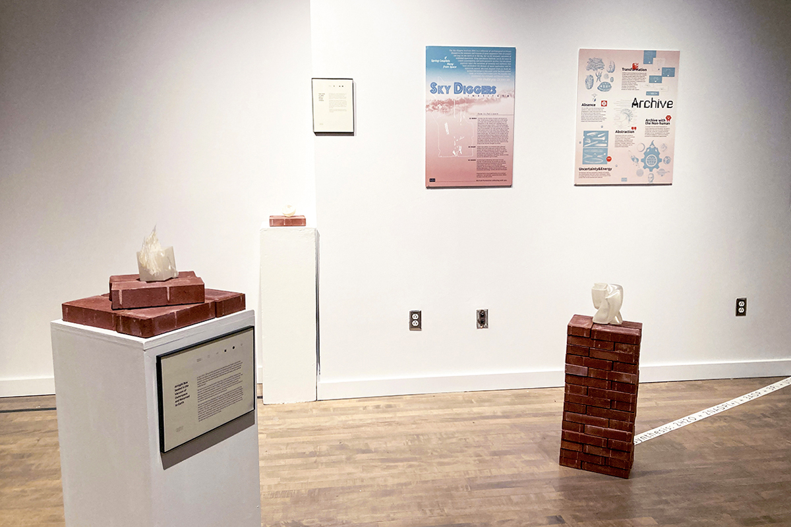
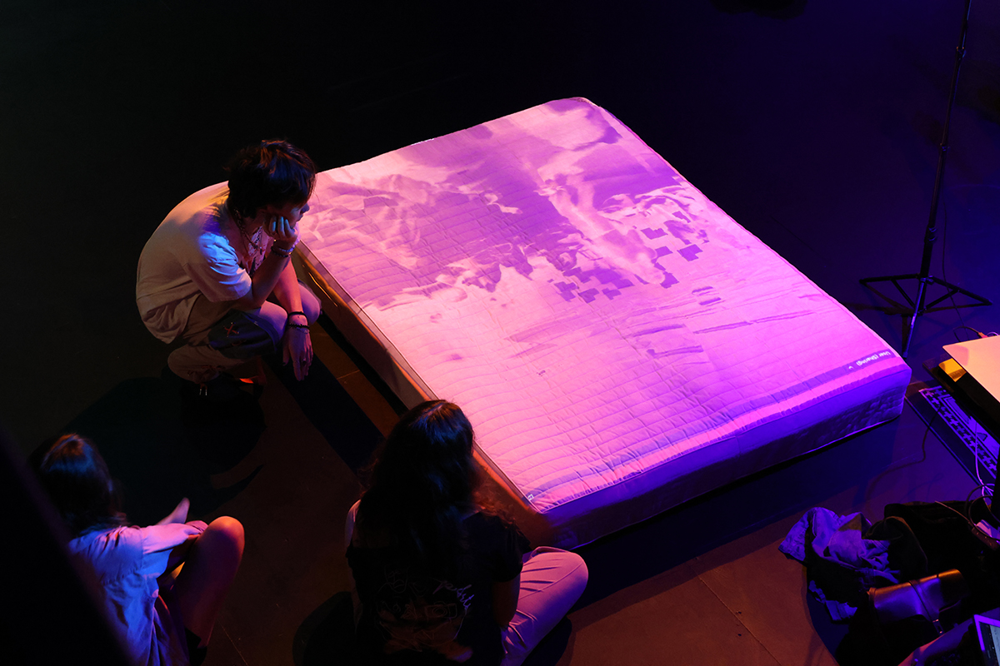

Materials: stuffed toys, chairs, windows, mirror, audio, maps2025
In Body 404 II, stuffed toys lie with their faces hidden, their physical...
Read More →

In this project, I conducted a series of workshops in which participants envisioned a funeral for an AI chatbot, encouraging...
Read More →
Body 404 explores different cosmotechnics to challenge the heavily human-focused image in contemporary AI. Rather than framing human and machine...
Read More →

In this project, I collaborated with archivist Becky Alexander to explore what archives fail to preserve and how we can...
Read More →

Flashing & Fleshing Dream, Illusion, Bubbles, Shadows 夢幻泡影Both Flashing & Fleshing and Dream, Illusion, Bubbles, Shadows were projects created for...
Read More →